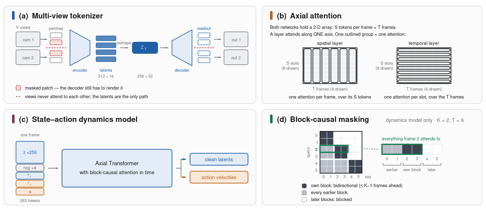
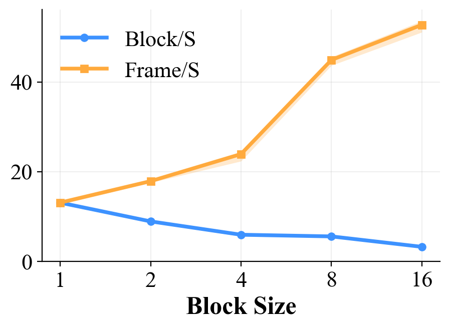
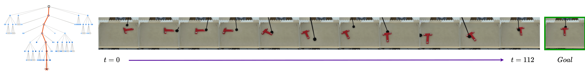

TL;DR
FLEX-WAM is one block-causal world–action model to act, simulate, imagine and plan. A single checkpoint runs as an interactive simulator or a real-time state–action streamer, stays stable over thousands of steps, and solves long-horizon tasks entirely in imagination.
One Block-Causal Model for States and Actions
Compact, Axial
Each camera frame is compressed into a few latent tokens, and an axial transformer attends over space and time in separate layers, keeping long sequences cheap.
Two Noise Levels per Frame
Every frame carries its state and its action, each with its own noise level, so one model can be a policy, a simulator, or both at once.
Block-Causal
Attention is bidirectional within a block and causal across blocks, so the model streams with a KV cache, and the block size, chosen at deployment, trades latency for throughput.


A Real-Time Policy That Knows What to Expect
On a bimanual OpenArm-based robot, FLEX-WAM runs as a 10 Hz closed-loop policy. Each wrist-camera frame is committed to the KV cache, grounding the model in reality at little cost, and the next action is predicted and executed. The same checkpoint predicts the expected outcome of each action, so mismatches between the model and reality can be spotted, and collected, while the robot runs.
Planning Entirely in Imagination
Because it both proposes actions and predicts their outcomes, FLEX-WAM plugs directly into Monte Carlo tree search, where every branch is an imagined rollout.

The Three-Minute Version
Code and Models
We will release the code, the checkpoints of every model in the paper, and this PushT demo, so it runs on your own GPU.
Citation
@article{khorrambakht2026flex,
title={FLEX-WAM: Flexible Block-Causal World-Action Models for Long-Horizon Imagination and Planning},
author={Khorrambakht, R and Amigo, Joseph and Lebel, F{\'e}lix and Seetoo, Leon and Ponce, Jean and Li, Zhenzhen and Righetti, Ludovic},
journal={arXiv preprint arXiv:2610.05483},
year={2026}
}